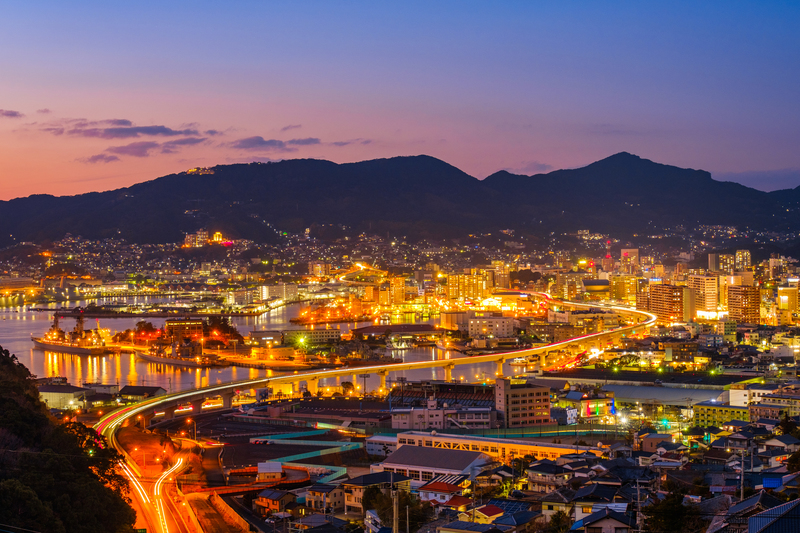
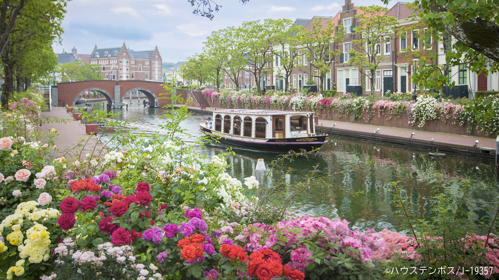
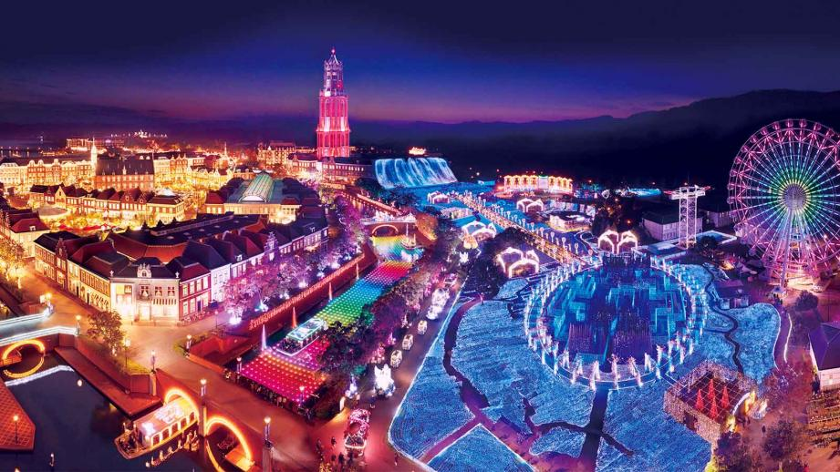

私の地元を紹介します
長崎県 佐世保市
長崎県北部に位置し、西海国立公園「九十九島」の美しい多島海景観や、テーマパーク「ハウステンボス」が有名です。
また、現在も米海軍基地を有する国際色豊かな港町でもあります。
ハウステンボス
 レンガ造りの建物や石畳の道など、まるでヨーロッパにいるかのような雰囲気を楽しめます。
東京ディズニーリゾートの約2倍の広さがあり、日本最大級のテーマパークとして知られています。
長崎県北部に位置し、西海国立公園「九十九島」の美しい多島海景観や、テーマパーク「ハウステンボス」が有名です。
また、現在も米海軍基地を有する国際色豊かな港町でもあります。
レンガ造りの建物や石畳の道など、まるでヨーロッパにいるかのような雰囲気を楽しめます。
東京ディズニーリゾートの約2倍の広さがあり、日本最大級のテーマパークとして知られています。